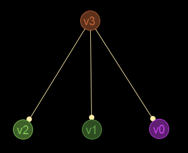

K20; todos los nodos de un grafo completo son universales:
gr_completo(20)
Salida JMEScriptGUI con visor de grafos v0.1:

gr_universal(gr_completo(20))
VectorEvaluado: [0,1,2,3,4,5,6,7,8,9,10,11,12,13,14,15,16,17,18,19]
Descripción
n-1 restantes)Cadena de entrada
gr_universal
Cadena de salida
GRAFO.universal
Uso
gr_universal(<grafo>[,<nodo>])
| Parámetros | |||
|---|---|---|---|
| # | Parámetro | Descripción | Valor por defecto |
| 1 | grafo | Diccionario válido de grafo | |
| 2 | nodo | Nodo a comprobar si es universal, dado por índice o etiqueta | ∅ |
Ejemplos
gr_nuevo([[0,0,0,0],[0,0,0,0],[0,0,0,0],[1,1,1,0]],verdadero)
Salida JMEScriptGUI con visor de grafos v0.1:

gr_universal(gr_nuevo([[0,0,0,0],[0,0,0,0],[0,0,0,0],[1,1,1,0]],verdadero))
VectorEvaluado: [3]
Nodov1:
gr_universal(gr_nuevo([[0,0,0,0],[0,0,0,0],[0,0,0,0],[1,1,1,0]],verdadero),'v1')
Booleano: falso
Nodov3:
gr_universal(gr_nuevo([[0,0,0,0],[0,0,0,0],[0,0,0,0],[1,1,1,0]],verdadero),3)
Booleano: verdadero
gr_completo(20)
Salida JMEScriptGUI con visor de grafos v0.1:
gr_universal(gr_completo(20))
VectorEvaluado: [0,1,2,3,4,5,6,7,8,9,10,11,12,13,14,15,16,17,18,19]
Desde / Última modificación
v0.6.2.0